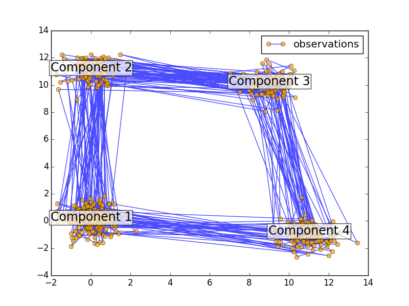

This script shows how to sample points from a Hiden Markov Model (HMM): we use a 4-components with specified mean and covariance.
The plot show the sequence of observations generated with the transitions between them. We can see that, as specified by our transition matrix, there are no transition between component 1 and 3.
Python source code: plot_hmm_sampling.py
print(__doc__)
import numpy as np
import matplotlib.pyplot as plt
from hmmlearn import hmm
##############################################################
# Prepare parameters for a 3-components HMM
# Initial population probability
start_prob = np.array([0.6, 0.3, 0.1, 0.0])
# The transition matrix, note that there are no transitions possible
# between component 1 and 4
trans_mat = np.array([[0.7, 0.2, 0.0, 0.1],
[0.3, 0.5, 0.2, 0.0],
[0.0, 0.3, 0.5, 0.2],
[0.2, 0.0, 0.2, 0.6]])
# The means of each component
means = np.array([[0.0, 0.0],
[0.0, 11.0],
[9.0, 10.0],
[11.0, -1.0],
])
# The covariance of each component
covars = .5 * np.tile(np.identity(2), (4, 1, 1))
# Build an HMM instance and set parameters
model = hmm.GaussianHMM(4, "full", start_prob, trans_mat,
random_state=42)
# Instead of fitting it from the data, we directly set the estimated
# parameters, the means and covariance of the components
model.means_ = means
model.covars_ = covars
###############################################################
# Generate samples
X, Z = model.sample(500)
# Plot the sampled data
plt.plot(X[:, 0], X[:, 1], "-o", label="observations", ms=6,
mfc="orange", alpha=0.7)
# Indicate the component numbers
for i, m in enumerate(means):
plt.text(m[0], m[1], 'Component %i' % (i + 1),
size=17, horizontalalignment='center',
bbox=dict(alpha=.7, facecolor='w'))
plt.legend(loc='best')
plt.show()
Total running time of the example: 0.11 seconds ( 0 minutes 0.11 seconds)